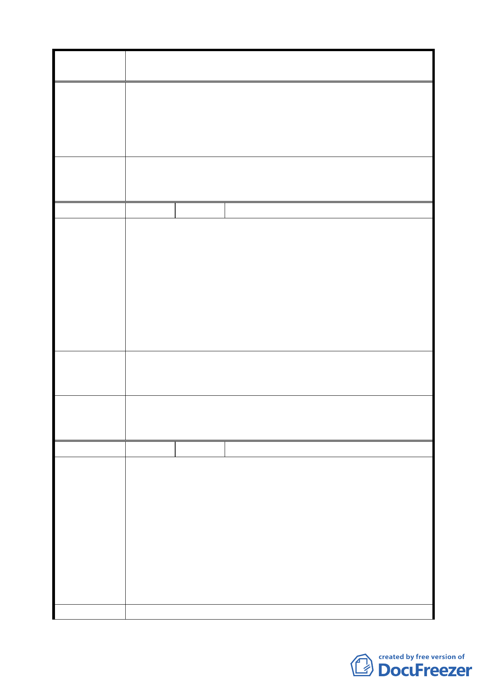

案 名 臺北市文山區都市計畫通盤檢討（主要計畫）案
審 查 結 論 二、木柵路三段公車調度站用地變更為停車場用地。
( 9 4 . 1 2 . 2 1 ) 附帶決議：
（一）地面層需做公園綠化，作為開放空間使用。
（二）停車場進行地下開發時，可一併納入鄰近道路用地，
以增加停車場經濟規模。
委員會議
決議
本陳情土地涉及有價徵購且開闢經費昂貴，經交通單位評估
工程效益不高，且欣欣客運目前向國有財產局洽商承租土地
之情形下，維持原「公車調度站用地」。
編 號 ３9 陳情人 林忠典（09530201800）
一、文山 21 號公園用地，因政府財政拮据一再延宕迄今尚未
徵收，卻同時限制地主對土地之使用逾數十年之久，多
年來已對地主本身財產造成重大的損失。
陳情理由
（主興 4）
二、若依都市計畫通盤檢討草案將本區變更為保護區後，本
區土地價值不僅無法做有效的開發使用而大打折扣，且
來日必須納入地主之遺產課稅標的中核課遺產稅，將對
地主造成雙重損失，相較之下，臺北市政府卻坐收減少
原本徵收公園所需支付的龐大經費支出，難免招致球員
兼裁判及與民爭利之惡名。
有關文山區都市計畫通盤檢討草案，據悉擬將文山 21 號公園
建 議 辦 法 變更為保護區，影響人民財產權益甚鉅恐招致民怨，請思考
其他可行方案或補救措施。
委員會議
決議
公園用地變更為保護區涉及全市性的通盤處理原則，且經公
園處 90.2.19 北市公藝字第 9060277700 號函建議變更為保護
區，因此同意市府所提建議依公展方案通過。
編 號 40 陳情人 林顯明（09530076200）
一、文山區興安段三小段 8 地號土地，原屬「林」地目，卻
於 20 年前暗中被市府權責單位逕行分割為公共設施人
行步道，而其北側小部分劃為第二種住宅區，其餘為保
陳情理由
（主興 2）
（興 隆）
護區，南側界線又註明風景區。最近領該地籍圖始知內
容。嗣日前市議會協調會，據權責單位口頭說明才知又
將全部劃為保護區，何以如此不合理不公道。
二、若該第二種住宅區將立劃入保護區，而毗鄰地卻可存在，
理由何在？該可存在之毗鄰地則有麥田山莊興建之社區
及「麥田山莊」本身其坡度何止才 15 度，將近 20 度、
30 度都有，卻能興建住宅。
建 議 辦 法 為文山區興安段三小段 8 地號土地，都市計畫極不合理，懇
二四